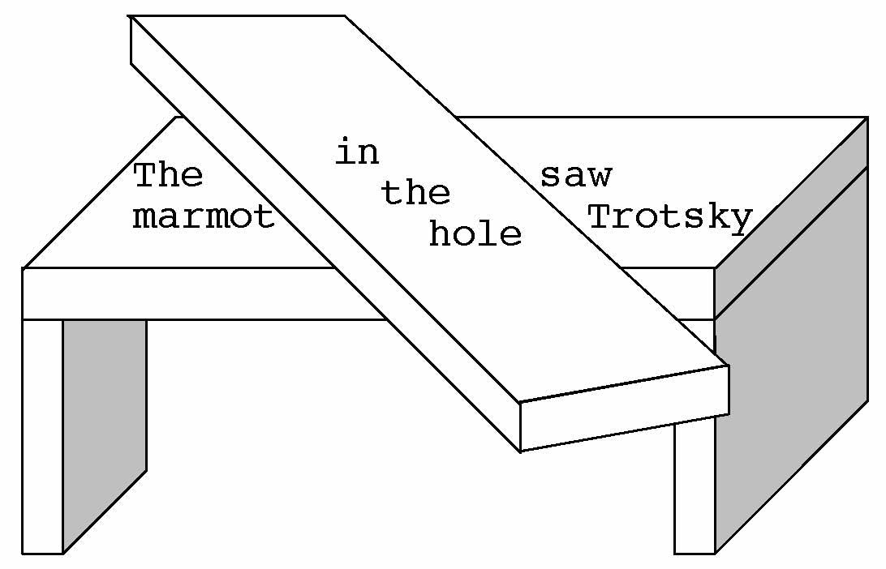
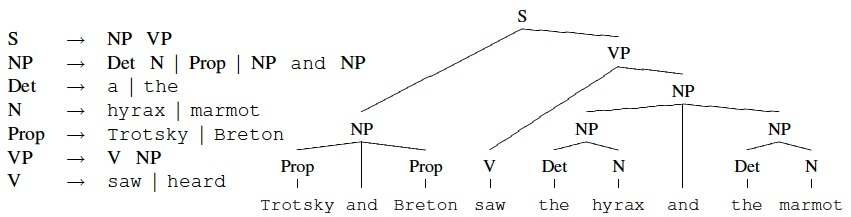
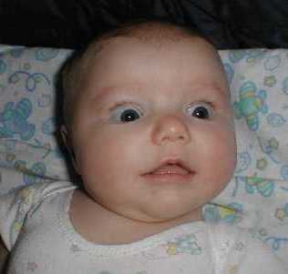

Week 8: Language
Lecture 8.1: the nature of language

Lectures 8.1 and 8.2: what language is for; what it is like; and how it is learned and used

- (I) What language is FOR
- (II) What language is LIKE (ability, use, structure)
- (III) What it means TO KNOW language
- (IV) How language is LEARNED and USED
The herd of elephants in the room: ChatGPT, Bing (a.k.a. "Sydney"), and
other LLMs.
the elephant in the room, or: why "AI" and not AI
the elephant in the room, or: why "AI" and not AI (con.t)
(I) what language is for, classical view: conveying "meaning" (1/2)

The standard —
whether formalist or
functionalist — account of what language is for:
structured thinking (if formalist) or communication (if
functionalist), as in:
"Take a MEANING, encode it, place it in an envelope, give
it to the recipient, which then decodes it".
On that account, here's the conception of "meaning", part I:
lexical semantics, or the meaning of "words" —
Trotsky saw a hyrax
Trotsky saw a capybara
Trotsky saw a marmot
An alternative conception: "words" as the handles of TOOLS.
(I) what language is for, classical view: conveying "meaning" (2/2)

The standard conception of "meaning", part II:
compositional semantics —
The meaning of a "sentence" is a
function — in the mathematical sense, that
is, a single-valued mapping from one domain to another —
of the meanings of its parts.

What that mapping is depends on the semantic theory in
question.
An alternative conception: uttering sequences of "words" = working with
TOOLS.
(II) what language is LIKE: it's like a lot of other behaviors
In response to the formalist / Chomskyan claims of "perfection"
and "uniqueness" of human language, consider:
-
imperfections of everyday language and INDIVIDUAL DIFFERENCES
in proficiency among speakers
-
ANALOGIES TO OTHER BEHAVIORS, including in other species:
"... the coordination of leg movements in insects, the song of birds, the
control of trotting and pacing in a gaited horse, the rat running the maze,
the architect designing a house, the carpenter sawing a board present a
problem of sequences of action ..."
— Karl Lashley (1951)
(II) what language ABILITY is like: INDIVIDUAL DIFFERENCES in linguistic ability
The LAD goes to school: A cautionary tale
for nativists
Ewa Dąbrowska, Linguistics 35:735-766 (1997).
Four types of sentences: complex NP,
tough
movement,
parasitic gap (two types), and
controls; 20 sentences altogether. Examples:
Q1. Robert was convinced that Jerry would get the job even though he
wasn't really qualified for it. [control]
What was Robert convinced of?
What wasn't Jerry qualified for?
Q2. Sandy will be easy to get the president to vote for.
Who will vote?
For whom will this person vote?
What will be easy?
Who will find it easy to do this?
(II) what language ABILITY is like: INDIVIDUAL DIFFERENCES (cont.)
The LAD goes to school: A cautionary tale for nativists
Ewa Dąbrowska, Linguistics 35:735-766 (1997).
Four types of sentences: complex NP, tough movement, gap 1, gap 2, and
controls; 20 sentences altogether. More examples:
Q3. It was King Louis who the general convinced that this slave might
speak to.
Who might the slave speak to?
Who did the convincing?
Who was convinced of something?
Q5. The manager knew that the fact that taking good care of herself was essential upset
Alice.
What did the manager know?
What upset Alice?
(II) what language ABILITY is like: INDIVIDUAL DIFFERENCES (cont.)
Test scores, by subject population type (max possible score was 640):
The LAD goes to school: A cautionary tale for nativists
Ewa Dąbrowska, Linguistics 35:735-766 (1997).
(II) what language ABILITY is like: INDIVIDUAL DIFFERENCES (cont.)
Test scores, by sentence type and subject population type:

The LAD goes to school: A cautionary tale for nativists
Ewa Dąbrowska, Linguistics 35:735-766 (1997).
[an ASIDE] individual differences / SYSTEMIC INEQUALITY
"The professoriate is, and has remained, accessible mainly to
the socioeconomically privileged."
"Using a survey of 7218 professors in PhD-granting departments
in the United States across eight disciplines in STEM, social
sciences, and the humanities, we find that the estimated
median childhood household income among faculty is 23.7% higher
than the general public, and faculty are 25 times more
likely to have a parent with a PhD."
Socioeconomic Roots of Academic
Faculty, Allison C. Morgan et al., Nature Human
Behaviour 6:1625-1633 (2022).
(II) what language behavior is like: the DIALOGIC structure of language

John Du Bois
(2014). Towards a dialogic syntax, Cognitive
Linguistics 25:359-410.
(II) what language behavior is like: the DIALOGIC structure of language
John Du Bois
(2014). Towards a dialogic syntax, Cognitive
Linguistics 25:359-410.
(II) what language behavior is like: the DIALOGIC structure of language

Above: partially ALIGNED and MATCHED halves of a snippet of
dialogue from the
Santa Barbara Corpus of Spoken American English.
Right: partially ALIGNED and MATCHED portions of a
GRAPH representation of the discourse, based on a
(mostly) shared corpus.
Graphs are a useful an indispensable
computational tool for representing discrete sequential (and
hierarchical) structure.
(II) what language BEHAVIOR is like [what does this remind you of?]
The problem of serial order in behavior, as formulated by Lashley
(1951), contains, upon reflection, two complementary aspects:
- The STRUCTURAL or SYNCHRONIC aspect: how to deal with
multiple input and/or output variables, specified at a given
instant of time. Hence the computational problem
of multimodality: embodied agents must
deal with multiple streams of information (multiple sensors &
actuators), which, moreover, may differ radically in their
statistical and other properties (e.g., auditory vs. visual
cues).
-
The TEMPORAL or DIACHRONIC aspect: how to deal with multiple
streams of information as they unfold over time. Hence the
computational problem of
concurrency:
the dynamical processes that affect / comprise
behavior not only unfold in parallel: they generally do so at
different rates and independently, or asynchronously, with
regard to each other.
[O. Kolodny and S. Edelman (2015). The problem of multimodal
concurrent serial order in behavior, Neuroscience and
Biobehavioral Reviews 56:252-265.]
(II) what [A CORPUS] of language USE is like: a GRAPH
Think of words as stations, sentences as using the system for
travel (possibly changing trains).
(II) what [THE DYNAMICS OF] language USE is like: production and dialogue
(III) what it means TO KNOW language, classical view: "grammar"

On the standard [formalist / functionalist] account, to know
language means to possess
a GRAMMAR — a system of formal rules that
- generates (all and only well-formed) sentences, and
- supports parsing of sentences into their constituents.
An alternative theory that is gaining ascendance posits a
LEXICON/GRAMMAR that is a very large collection of partly
pre-filled patterns
(constructions) that are learned from
experience through statistical inference [examples next
time!!].
These patterns are generative: they can give rise to partially new
utterances and behaviors that further enrich the communal experience.
(III) what it means to know language

The radical (and, I think, correct) view is
that CONSTRUCTIONS form a TOOLKIT for INFLUENCING other
people's thinking and behavior (as well as one's own).
To know language means to have mastery of a toolkit that allows
one to influence behavior and thinking, of others and of self.
Some examples:
-
A construction for inquiring about a person's name.
-
A construction for thanking a person.
-
A construction for telling someone that your answer is final.
-
...
(III) language: the core computational problem
The general computational problem implied by the above
characteristics is that of NAVIGATION CONTROL: “What shall I say
[and do] next?”
Language behaviors reside in a graph-like space of sequences of
multimodal gestures — CONSTRUCTIONS — that are invoked in a game
of influence between interlocutors and are subject to multiple,
dynamically changing contextual constraints.
recap: the nature of language; on to learning
- (I) what language is for:
influencing/manipulation of others and self
- (II) what language is like:
structured, situated, incremental, dynamically constrained,
concurrent, multimodal social behavior
- (III) what it means to know language:
to have skills for influencing behavior and thinking
- (IV) how language is learned and used
(IV) how language is learned: "blooming, buzzing confusion"

"Experience, from the very first, presents us with concreted objects, vaguely
continuous with the rest of the world which envelops them in space and time, and
potentially divisible into inward elements and parts. [...] The baby, assailed by
eye, ear, nose, skin and entrails at once, feels it all as one great
blooming, buzzing confusion[.]
[from The Principles of Psychology by William
James, v.I, p.488 (1890)]
overcoming the confusion: STATISTICS to the rescue
"When only a small percentage of all possible sound-sequences actually
occurs in utterances, one can identify the boundaries of words, and their
relative likelihoods, from their sentential environment.
It is an essential property of language that the combinations of words
and utterances are not all equiprobable.
It follows that whatever else there is to be said about the form of language,
a fundamental task is to state the departures from equiprobability in
sound- and word-sequences."
Zellig S. Harris, A theory of language and information
(1991)
STATISTICS: the only way to discover structure in data
Despite initial appearances, this sequence has some highly improbable
properties. Can you tell what they are?
[And don't say
"It's all Greek to me"]
structure from regularities
Despite initial appearances, this sequence has some highly improbable
properties.
Specifically, it contains a repeating subsequence that is six
symbols long.
language structure: digital (discrete)
-
A communication system that relies on a set of continuous,
indivisible signals would be very, very difficult to learn
and use. [How would you even do statistics?]
-
Discreteness aids learnability and use. All human languages
rely on combinatorially and hierarchically composed discrete
signals.
-
Normal speech is continuous: there are no silences between
words. Nevertheless, there are discrete units in speech.
-
The smallest discrete (categorical; all-or-none) element of
speech is the
phoneme.
There are 14 phonemes in the utterance "they don't know where to go",
whose spectrogram
is shown here.
The CONTROL problem: Which unit from a fixed repertoire to
choose? / Which node in the graph to go to next?
Next time: how all this may be represented and learned.


")